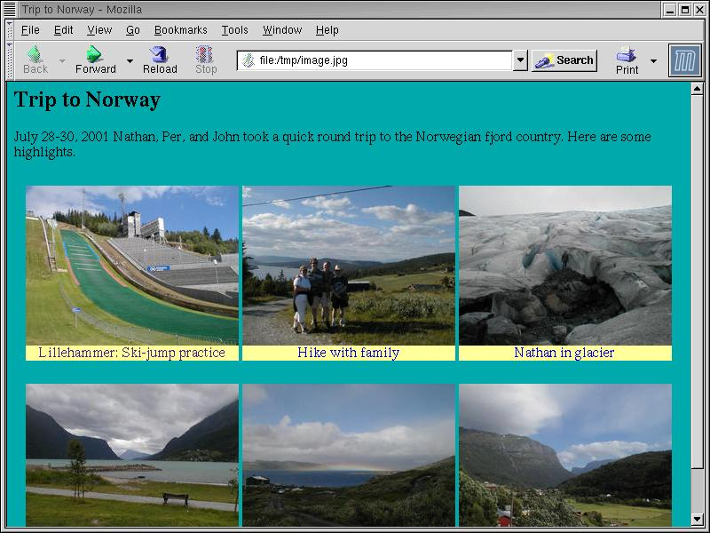

Material from this article will appear in a book on XQuery to be published by Sam's publishing. If you find a mistake, or something unclear, I would appreciate hearing about it, so I can fix the text.
Most people think of XQuery as a query language for processing XML "data-bases". But it is also a very nice language for generating XML and HTML, including web pages. In this article we will look at XQuery from this angle.
There are many tools for generating web pages. Many of these are based on templates: You write an HTML page, but you can embed within it expressions that get calculated by the web server.
<p>3*4 is: <%= 3*4%>.</p>
<p>3*4 is: <?php echo 3+4 ?>.</p>
<p>3*4 is: <%= 3*4%>.</p>
.NET languages.
<p>3*4 is: [(+ 3 4)].</p>
<p>3*4 is: {3*4}.</p>
There is one important difference between XQuery and most template systems: In the former you can nest expressions in some programming language inside HTML. With XQuery additionally nest HTML inside expressions. For example, this loop:
for $i in (1 to 10) return
<p>{$i}*4 is: {$i+4}</p>
With XQuery, you can also define functions that return HTML fragments, and you can pass those fragments though to other functions. With most template systems, you can only create output fragemnts as strings, and pass them around as strings.
As an example of how to generate Web pages using XQuery we will show a photo album application. There are lots of such applications around, and while they differ in features, they all have the same basic idea: You throw a bunch of digtal images (JPEG files) at it, and it generates a bunch of web pages. The overview page shows many smaller "thumbnail" images; if you click on one, you get a bigger version of that image.
There are two basic approaches to doing this:
file: URL,
even if you aren't running a server. You can even burn
the web pages onto a CD-ROM and browse the pages from there.
Also, you may have an ISP allows you to put up web pages,
but running server scripts may be an extra-cost option.
We will show how you can do either using XQuery, starting out with how to generate static web pages in advance.
For each album, we have an XML file that contains a list of JPEG images files, with some information about each picture. This XML file can be generated using a scripts that scans the JPEG files in a directory, or it can be edited by a text editor. I use a combination of scripts and manual editing, but that's not relevant to our goal of learning and using XQuery.
This sample index.xml file
describes six digital pictures from a car trip to the West Coast
of Norway in the Summer of 2001.
Each photograph is described by a <picture> element.
Each picture is available in three resolutions:
<full-image> element gives the
name (and size in pixels) of the original full-size image.
<image> element gives the
name and size of the image scaled suitable for viewing in a web page by
itself when browsing.
<small-image> element gives the
name and size of a thumbnail image.
<group> <title>Trip to Norway</title> <text>July 28-30, 2001 Nathan, Per, and John took a quick round trip to the Norwegian fjord country. Here are some highlights.</text> <picture id="Lillehammer22"> <caption>Lillehammer: Ski-jump practice</caption> <date>2001-07-28</date> <text>The Lillehammer olympic 90m ski-jumping hill is used for Summer practice. You can see a jumper landing.</text> <full-image width="1280" height="960">Lillehammer22.jpg</full-image> <image width="740" height="555">Lillehammer22p.jpg</image> <small-image width="240" height="180">Lillehammer22t.jpg</small-image> </picture> <picture id="WedingCabinHike1"> <caption>Hike with family</caption> <date>2001-07-28</date> <text>We stayed at the cabin of Agnes (Per's cousing "Mimmi") and Kjell Weding at Gålå near Ringebu, and we went for an evening hike with them.</text> <full-image width="1280" height="960">WedingCabinHike1.jpg</full-image> <image width="740" height="555">WedingCabinHike1p.jpg</image> <small-image width="240" height="180">WedingCabinHike1t.jpg</small-image> </picture> <!-- more picture elements as desired --> <picture id="ViaValdres2"> <caption>Valdres valley</caption> <full-image width="1280" height="960">ViaValdres2.jpg</full-image> <image width="740" height="555">ViaValdres2p.jpg</image> <small-image width="240" height="180">ViaValdres2t.jpg</small-image> </picture> </group>
Our first task is to generate the overview page. We want at most three thumbnails per line, producing something like the following page.
This is a nice example that illustrates the kind of non-trivial re-arranging that would be difficult to do with a template system or with XSLT, and tedious to do with a language like Java.
Here is the "main program" to generate the overview page:
let $group := document("index.xml")/group
return
make-group-page($group)
This is simple enough: We call the document function
to read the index.xml file. This returns the
document root, so we do /group to select the top-level
group node, which we pass to the make-group-page
function, which does the actual work of creating the web page.
define function make-group-page($group) {
<html><head>
<title>{children($group/title)}</title>
<style type="text/css">
a.textual {{ text-decoration: none }}
img {{ border: 0 }}
</style>
</head>
<body bgcolor="#00AAAA">
<h2>{children($group/title)}</h2>
{make-row(0, $group/picture)}
</body></html>
}
The value returned by a call to make-group-page is
calculated by an element constructor expression,
which looks like normal XML data,
except you can use {curely braces}
to embed XQuery expressions.
For example both the <title> and <h2>
HTML elements contain XQuery expressions that select
the <title> child of the $group parameter,
and then select the children (usually a text node).of that
<title> child.
Note that {{double curly braces}}
are used for curly braces that should appear as is in
the <style> element.
Things start to get interesting when we get to the
call to make-row. This is a recursive helper used
to divide a sequence of <picture> elements
into rows of at most three. It's quite straight-forward
if you're comfortable with recursive functions. (If you're not
comfortable using recursion, it may seem mysterious - but it does work.)
The $picture parameter is a sequence of the
<picture> elements we haven't dealt with yet.
If the list is empty, we return nothing (i.e. the empty
sequence ()).
If there are 3 or fewer pictures, we pass them the format-row
function, which make a single row of thumbnail picture.
If there are exactly 4 pictures total,
we take the first two pictures, and pass them the
format-row functions, which puts 2 thumbnail pictures in one row,
and then we do the same with the remaining 2 pictures.
Otherwise, there are more than 3 pictures, so we take the first 3 pictures,
put them in a row using format-row,
then we take the rest of the pictures (starting at picture 4),
and recursively call make-row.
This preocesses the rest of the pictures in the same way,
putting 3 pictures in a row each time, until we come to the end.
{-- Process a sequence of <picture> elements, grouping them into
-- rows of at most 3, for the thumbnail page.
-- $prev: An integer giving the number of <pictures> previously processed
-- in this current sequence.
-- $pictures: Remaining <picture> elements to processes.
-- Returns a <table> (as created by format-row) for group of at most 3.
--}
define function make-row($prev, $pictures) {
let $count := count($pictures) return
if ($count = 0) then ()
else if ($count < 3) then
format-row($pictures)
{-- A special case: If there are 4 pictures in a row, then group them
-- as 2 rows of 2 rather than 3 + 1. --}
else if ($count = 4 and $prev = 0) then
(format-row(sublist($pictures, 1,2)),
format-row(sublist($pictures, 3,2)))
else
(format-row(sublist($pictures, 1,3)),make-row($prev+3,sublist($pictures,4)))
}
The format-row function loops over a sequence
of <picture> elements, and calls
make-thumbnail on each one. If the <picture>
has a <caption> child, that is placed underneath
the thumbnail. We wrap each thumbnail+caption inside an <a>
HTML link wrapped in side an HTML <table>, finally
wrapping the entire row in another HTML <table>.
define function format-row($row) {
{-- emit a newline for readabilty --} "
",<table width="90%"><tr>{
for $pic in $row return
<td>
<table bgcolor="black" cellpadding="0" frame="border"
border="0" rules="none" vspace="10">
<tr>
<td align="center"><a href="{$pic/@id}.html">{make-thumbnail($pic)}</a></td>
</tr>
{ if ($pic/caption) then
<tr>
<td bgcolor="#FFFF99" align="center">
<a class="textual" href="{$pic/@id}.html">{children($pic/caption)}</a></td>
</tr>
else ()}
</table>
</td>
}</tr></table>
}
Finally, the make-thumbnail looks for a
<small-image> child that contains the
actual name of the JPEG file, and calls make-img
to emit the <img> image link.
If there is no <small-image>, we look for
a <image> or a <full-image> element,
and scale that instead.
define function make-thumbnail($pic) {
if ($pic/small-image) then
make-img($pic/small-image, 1.0)
else if ($pic/image) then
make-img($pic/small-image, 0.5)
else if ($pic/full-image) then
make-img($pic/full-image, 0.2)
else
( "(missing small-image)", string($pic), ")" )
}
define function make-img($picture, $scale) {
<img border="1" src="{$picture}" width="{number($picture/@width) * $scale}" height="{number($picture/@height) * $scale}" />
}
The code so far ignores any children of the top-level
<group> except for <picture>.
However, if you look at the original index.xml example,
you'll see that the <group> has a <text>
child. We'd like to place any such <text> contents
in the appropriate place on the overview page.
Another sometimes useful feature is to be able to explicitly
specify how the pictures are to be origanized into rows,
rather than depend on the default maximum-three-per-row.
You can do that by putting a <row> element
around one or more <pciture> elements to
specify that these shoudl go in a row my themselves.
define function make-group-page($group) {
<html><head>
... rest as before ..
<h2>{children($group/title)}</h2>
</body></html>
}
{-- Process the children of a <group>, grouping thumbnails into rows.
-- $pictures: A sequence of consequtive seen <picture> elements.
-- $unseen: sequence of remaining children we have not processed yet.
--}
define function find-rows($pictures, $unseen) {
if (empty($unseen)) then make-row(0, $pictures)
else
let $next := item-at($unseen, 1),
$rest := sublist($unseen, 2)
return
typeswitch ($next)
case element row return
(make-row(0, $pictures),format-row($next/*),find-rows((), $rest))
case element date return {-- ignore <date> children here. --}
(make-row(0, $pictures),find-rows((), $rest))
case element title return {-- ignore <title> children here. --}
(make-row(0, $pictures),find-rows((), $rest))
case element text return {-- format <text> as a paragraph. --}
(make-row(0, $pictures),<p>{children($next)}</p>,find-rows((), $rest))
default return
find-rows(($pictures,$next), $rest)
}
The initial call to find-rows sets
$pictures to the empty sequence,
and $unseen to the sequence of all the child elements of
the top-level <group>.
If $unseen is the empty sequence, we're done, and we
just call make-row to wrap things up
the last row.
Otherwise, we look at the first element of $unseen.
We use a typeswitch expression to do the appropriate thing
depending on the type of that first element.
A typeswitch evaluates a expression (in this case
$next, the first value of the $unseen sequence).
Then it searches through the case clauses,
each of which specifies a type. The first case clause
such that the $next value is an instance of the type is
selected, and the corresponding return expression evaluated.
If there is no matching case, the default return
expression is evaluated instead.
So if the next value is a <row> element,
we first pass any previously seen $pictures
to make-row so it can split those into rows;
then we pass the children of the <row> element
to format-row to create a single row; and then we
recursively call find-rows to process the $rest
of the sequence.
The next two cases are to just skip any <title>
and <date> elements since they are handled elsewhere.
The logic for handling a <text> element is
similar to that for <row> except that we
wrap the contents of the <text> in a <p>
paragraph. Finally, the default case handles <picture>
elements with a recursive call that moves the $next
element over to the $pictures sequence.
Now let us look at how we can generate a web page for each picture, something like this following figure.

The first tricky part is dealing with the links for the previous and next picture. The other tricky part is that we want to support multiple styles. The existing code supports three styles that each image can be displayed in:
Thus we need to generate 3 HTML pages times the number
of <picture> elements. Exactly how to
write all these files is somewhat implementation dependent.
There are (at least) three ways to do it:
inputs
is one way to tell the XQuery program which file to generate.
The output from XQuery is re-directed to the intended HTML file.
<outputs>
<output-file filename="picture1.htlm">
<html>contents of picture1.html</html>
</output-file>
<output-file filename="picture2.htlm">
<html>contents of picture2.html</html>
</output-file>
... and so on ...
</outputs>
It is then easy to write a post-processor to split this into
separate XML files.
The Qexo implementation of XQuery includes a write-to
builtin-function. It takes two parameters: A value (normally
an element node), and a file name and writes the former
to the latter, using HTML-compatible XML (XHTML) syntax.
It returns an empty sequence. Other XQuery implementations
may have similar functions.
The overmost expression of our new XQuery program
writes both the index.html
overview file, and each of the individual picture pages, the latter
in each of the 3 styles.
Writing the picture pages is done by two nested loops, the outermost
own looping over <picture> elements, and the
inner loop loops over the 3 styles. Each then calls the picture
function to generate each picture page, and uses write-to
to write the HTML to the appropriate file. The file names are generated
by concatenating the picture's id attribute, the style string,
and the .html extension.
let $group := document("index.xml")/group,
$group-date := $group/date,
$group-name := $group/title,
$pictures := $group//picture,
$count := count($pictures)
return (
write-to(make-group-page($group), "index.html"),
for $i in 1 to $count
for $style in ("", "info", "large")
let $picture := item-at($pictures,$i),
$prev := if ($i > 1) then item-at($pictures, $i - 1) else (),
$next := if ($i < $count) then item-at($pictures, $i + 1) else (),
$date := if ($picture/date) then $picture/date else $group-date ,
$name := (if ($picture/caption) then $group-name
else concat(string($group/title), " - ", string($picture/caption)))
return
write-to(
picture($picture, $group, string($picture/@id),
$prev, $next, $date, $style),
concat(string($picture/@id), $style, ".html"))
)
The builtin function item-at selects a value from
a sequence using a index (starting at one).
We've already looked at make-group-page.
Next is the big picture function which returns
a single picture page as an <html> element.
{-- Generate a page picture image with links etc.
-- $picture: The <picture> node to use.
-- $group: The enclosing <group>
-- $prev: The previous <picture> or the empty sequence there is none.
-- $next: The next <picture> or the empty sequence there is none.
-- $date: The date the picture was taken, as a string, or the empty sequence.
-- $style: The style and size, Currently only "large" or "" (medium)
-- or "info". The "info" style show a thumbnail, plus EXIF information,
-- plus links to raw the JPGs.
--}
define function picture($picture, $group, $name, $prev, $next, $date, $style) {
<html>
<head>
<meta content="text/html; charset=UTF-8" http-equiv="Content-Type"/>
<link rel="up" href="index.html" />
{if (empty($prev)) then () else <link rel="prev" href="{$prev/@id}{$style}.html" />}
{if (empty($next)) then () else <link rel="next" href="{$next/@id}{$style}.html" />}
<title>{make-title($picture,$group)}</title>
<style type="text/css">
a {{ padding: 1 4; text-decoration: none; }}
td {{ padding-left: 0; border-style: none }}
span.button {{ border-width: thin; background-color: #FFFF99; border-style: solid }}
</style>,
<script language="JavaScript">
document.onkeypress = handler;
function handler(e) {{
var key = navigator.appName == 'Netscape' ? e.which : window.event.keyCode;
{ if (empty($next)) then () else
concat(' if (key == 110) { location="',
string($next/@id), $style, '.html"; return true; }
'),
if (empty($prev)) then () else
concat(' if (key == 112) { location="',
string($prev/@id), $style, '.html"; return true; }
')} return routeEvent(e); }}
</script>
</head>
<body bgcolor="#00AAAA">
{nav-bar($picture, $name, $prev, $next, $style)}
{make-header($picture, $group)}
{picture-text($picture)}
{if (empty($date)) then () else <p>Date taken: {$date}.</p>}
{let $full-image := $picture/full-image,
$image := $picture/image
return
if ($style = "info") then (
make-thumbnail($picture),
document(concat($name,"-info.txt")),
<table><tr><td>Plain JPEG images:</td>
{raw-jpg-link($picture/full-image, "Original")}
{raw-jpg-link($picture/image,
if ($full-image) then "Scaled" else "Original")}
{raw-jpg-link($picture/small-image, "Thumbnail")}
</tr></table>
)
else if ($style="large" and $full-image) then
make-img($full-image, 1)
else if ($style="large" and $image
and number($image/@width) <= 640 and number($image/@height) <= 640) then
make-img($image, 2)
else if ($full-image) then
make-img($full-image, 0.5)
else
make-img($image, 1)
}
</body>
</html>
}
The basic structure of this should by now be familiar.
The JavaScript function goes to the next or previous page
if 'n' or 'p' is pressed.
(The strange layout of the code is to make the generated HTML look nice.)
Note how we check the $style parameter
to select which JPEG image to show, and whether we need to scale it.
The "info style generates a picture with information
about the picture itself, as in this figure.
This so-called EXIF information is generated by the camera, and
has been extracted from the the JPEG file using the jhead program
(http://www.sentex.net/~mwandel/jhead/).

The navigation bar (i.e. the row of buttons on the top of the page)
is generated by the nav-bar function.
{-- Create a 1-row navigation-bar: next, prev etc --}
define function nav-bar($picture, $name, $prev, $next, $style) {
<table><tr>
<td><span class="button"><a href="index.html">Index</a></span></td>
{if ($style="info") then () else
<td><span class="button">{make-link($name, "info", "Info")}</span></td>}
{if ($style="large") then () else
<td width="200" align="left"><span class="button">{make-link($name, "large", "Large image")}</span></td>}
{if ($style="") then () else
<td width="200" align="left"><span class="button">{make-link($name, "", "Medium image")}</span></td>}
<td width="100" align="right">{
if ($prev) then
<span class="button">{make-link($prev/@id, $style, " < Previous ")}</span>
else ()}</td>
<td width="100" align="left">{ if ($next) then
<span class="button">{make-link($next/@id, $style, " Next > ")}</span>
else ()}</td>
</tr></table>
}
This is standard use of HTML tables to arrange the clickable buttons in
a row.
The <span class="button">
acts with the toplevel <style>.
Notice the use of conditionals to only generate the buttons that make sense.
Finally, the last 5 "small" functions:
define function picture-text($picture) {
for $text in $picture/text return <p>{children($text)}</p>
}
define function make-title($picture, $group) {
concat(string($group/title), " - ",
if (empty($picture/caption)) then string($picture/@id)
else string($picture/caption))
}
define function make-header($picture, $group) {
<h2>{children(if ($picture/caption) then $picture/caption else $group/title)}</h2>
}
define function raw-jpg-link($image, $description) {
if (empty($image)) then () else
<td><span class="button"><a href="{$image}">{$description} ({string($image/@width)}x{string($image/@height)})</a></span></td>
}
define function make-link($picture-name, $style, $text) {
<a href="{$picture-name}{$style}.html">{$text}</a>
}
Servlets are a popular framework for having a web server process a web (http) request. It is both efficient and powerful, and it part of the Java Enterprise framework. JSP (Java Server Pages, mentioned earlier) is built on top of servlets. A JSP page is an HTML template that can contain embedded Java expressios and commands. A JSP-capable web server automatically translates (if needed) a JSP "page", creating from it a Java servlet class. Such a server has various ways you can configure it to select which servlet is executed for a given request url.
The photo-album application would be very difficult to write using JSP. However, it is quite easy to do it using XQuery. There is at this time no standard for how web servers can cause XQuery programs be be executed in response to a web request, so we will look at how the Qexo implementation supports servets.
let $group := document("index.xml")/group,
$group-date := $group/date,
$group-name := $group/title,
$pictures := get-pictures($group),
$path-info := substring(request-path-info(), 2),
$count := count($pictures)
return
if ($path-info = "index.html") then
make-group-page($group)
else
for $i in 1 to $count return
let $picture := item-at($pictures,$i),
$id := string($picture/@id),
$prev := if ($i > 1) then item-at($pictures, $i - 1) else (),
$next := if ($i < $count) then item-at($pictures, $i + 1) else (),
$date := if ($picture/date) then $picture/date else $group-date,
$name := (if (empty($picture/caption)) then $group-name
else concat(string($group/title), " - ", string($picture/caption)))
return
if ($path-info = concat(string($picture/@id), ".html")) then
picture($picture, $group, string($picture/@id),
$prev, $next, $date, "")
else if ($path-info = concat(string($picture/@id), "info.html")) then
picture($picture, $group, string($picture/@id),
$prev, $next, $date, "info")
else if ($path-info = concat(string($picture/@id), "large.html")) then
picture($picture, $group, string($picture/@id),
$prev, $next, $date, "large")
else
()
The request-path-info returns the request URL,
relative the servlet context. We strip off the initial '/',
and that becomes the $path-info variable.
Depending on $path-info's value
we either call make-group-page (if "index.html"
was requested), or loop through the pictures looking for a matching
<picture> element.
This search loop isn't the most efficient implementation,
but it's simple and fast enough for this application.
[[Show how we can modify the photo album example to run as a servlet under Qexo. This includes both the modifications to the XQuery code, and how we can compile and install it in Tomcat.]]
[[Some other Qexo features useful for servlet/web applications]]
Summary of advantages of XQuery vs JSP and similar template systems:
CGI (Common Gateway Interface) scripts or programs or scripts that are executed by a Web server in response to a request. The request parameters are passwd to the script as environment variable. The script writes the result parameters followed by the data (typically an HTML page) to standard output, and the server takes that ourput and sends it back as an HTTP response.
You can have a CGI script call a XQuery processer, and that way use XQuery to generate the result. Using CGI scripts will not give you high performance, especially if you have to start up an XQuery processor on each request. On the plus side, it does not requie any server modifications or configuration, and it may be fast enough for some applications. It may be most useful for testing simple Xquery applications.
Another problem running XQuery from CGI scripts is that there is no standard for accessing request parameters from XQuery. The Qexo implementation provides a set of functions that is a subset of the servlet functionality. Qexo provides a wrapper scipt that runs a servlet, and using the CGI environment variable to provide a subset of the servlet functionality. For example, you can write a little XQuery program like this:
response-content-type("text/html"),
<html>
<p>The request URL was: request-url()</p>
<p>{let $query := request-query-string() return
if ($query)
then ("The query string was: ",$query)
else "There was no query string."}</p>
</html>
If this is in the file hello.xql,
you compile it to a servlet this:
kawa --servlet --xquery -C hello.xql
The copy the resulting .class file(s) to your
web server's CGI directory. On Red Hat GNU/Linux using the
Apache server, you can do the following (as root):
cp hello*.class /var/www/cgi-bin/
Next find the cgi-servlet program that Kawa builds and installs.
If you installed Kawa in the default place, it will be in
/usr/local/bin/cgi-servlet.
(You'll have this if you installed Kawa from source, but not
if you're just using Kawa .jar file.)
Copy this program into the same CGI directory:
cp /usr/local/bin/cgi-servlet /var/www/cgi-bin/
Make sure the files have the correct permissions:
chmod a+r /var/www/cgi-bin/hello*.class /var/www/cgi-bin/hello chmod a+x /var/www/cgi-bin/hello
Now you should be able to run the Kawa program,
using the URL http://localhost/cgi-bin/hello.
It may take a few seconds to get the reply, mainly because of the
start-up time of the Java VM. That is why servlets are
preferred. Using the CGI interface can still be useful
for testing or when you can't run servlets.
XSLT (XSL Transformations, where XSL stands for XML Stylesheet Language) is popular and powerful langauge for transforming an input XML document into an output document, which can be XML, HTML, or plain text. XSLT became a W3C recommendation (standard) in 1999; it is being revised in conjunction with the XQuery standardization process. This is because XSLT uses XPath for expresions and patterns, and XPath is also a subset of XQuery.
The most obvious difference between XSLT and XQuery is that an XSLT "program" (a stylesheet) is actually also an XML document. This can sometimes be useful, but it has the big disadvantage that XSLT stylesheets, in spite of their simplocity, can be both verbose and hard to read.
The more signification difference betwen XSLT and XQuery is
in the execution model, specifically the flow of control.
XQuery is relatively "normal" programming language, except
for the unusual data types, with explicit control flow.
In contrast, executing an XSLT stylesheet is controlled
by a template processor,
which matches a node against a set of template, selects the
template whose pattern most closely matches the input node,
and then executes that template. This process may then be
repeated by the xslt:<apply-templates>
instruction, which recursively calls the template processor
on the child nodes of the current node.
Using pattern matching to drive the execution in this way is very powerful and usually convenient. It works best when doing relatively simple conversion that can be expressed using pattern. You can do more complex programming using XSLT, but it can quickly become very awkward and verbose.
As an example application we will look at converting Docbook to HTML, using both XSLT and XQuery. Docbook is a popular SGML/XML format for writing technical documentation. Groups that use it for manuals and help files include the Linux Documentation Project and the Gnome project.
First is a simple (and incomplete) XSLT stylesheet for translating Docbook to HTML:
<?xml version="1.0"?>
<xsl:stylesheet xmlns:xsl="http://www.w3.org/1999/XSL/Transform" version="1.0">
<xsl:template match="sect1/title">
<h2 class="title"><xsl:apply-templates/></h2>
</xsl:template>
<xsl:template match="sect2/title">
<h3 class="title"><xsl:apply-templates/></h3>
</xsl:template>
<xsl:template match="artheader/title">
<h1><xsl:apply-templates/></h1>
</xsl:template>
<xsl:template match="artheader/subtitle">
<h2><xsl:apply-templates/></h2>
</xsl:template>
<xsl:template match="artheader/authorgroup">
<h3><i><xsl:apply-templates/></i></h3>
</xsl:template>
<xsl:template match="biblioentry/abbrev">[<xsl:apply-templates/>]</xsl:template>
<xsl:template match="biblioentry/title"><cite><xsl:apply-templates/></cite></xsl:template>
<xsl:template match="biblioentry/authorgroup"><xsl:apply-templates/>.</xsl:template>
<xsl:template match="article">
<html>
<head>
<xsl:if test="artheader/title">
<title><xsl:value-of select="artheader/title"/></title>
</xsl:if>
</head>
<body>
<xsl:apply-templates/>
</body>
</html>
</xsl:template>
<xsl:template match="title">
<title><xsl:apply-templates/></title>
</xsl:template>
<xsl:template match="abstract">
<div type='abstract'><h3>Abstract</h3><xsl:apply-templates/></div>
</xsl:template>
<xsl:template match="element">
<p><xsl:apply-templates/></p>
</xsl:template>
<xsl:template match="para">
<p><xsl:apply-templates/></p>
</xsl:template>
<xsl:template match="screenshot">
<img src='{mediaobject/imageobject/imagedata[@format="PNG"]/@fileref}' />
</xsl:template>
<xsl:template match="caption">
<p><b><xsl:apply-templates/></b></p>
</xsl:template>
<xsl:template match="emphasis"><em><xsl:apply-templates/></em></xsl:template>
<xsl:template match="citation">[<xsl:apply-templates/>]</xsl:template>
<xsl:template match="quote">"<xsl:apply-templates/>"</xsl:template>
<xsl:template match="classname"><code><xsl:apply-templates/></code></xsl:template>
<xsl:template match="function"><code><xsl:apply-templates/></code></xsl:template>
<xsl:template match="itemizedlist">
<ul><xsl:apply-templates/></ul>
</xsl:template>
<xsl:template match="listitem">
<li><xsl:apply-templates/></li>
</xsl:template>
<xsl:template match="sect1">
<div class="sect1">
<xsl:apply-templates/>
</div>
</xsl:template>
<xsl:template match="sect2">
<div class="sect2">
<xsl:apply-templates/>
</div>
</xsl:template>
<xsl:template match="programlisting">
<pre><xsl:apply-templates/></pre>
</xsl:template>
<xsl:template match="bibliography">
<div class="bibliography"><h2>Bibliography</h2><xsl:apply-templates/></div>
</xsl:template>
<xsl:template match="biblioentry">
<p><xsl:apply-templates/></p>
</xsl:template>
</xsl:stylesheet>
In contrast, here is an XQuery program for doing the same
Docbook-to-HTML translation. Since XQuery doesn't have XSLT's
template-matching driver, we have write explicit control
flow using recursive function calls.
The typeswitch expression is useful for selecting
between different node types, but unfortuntely XQuery type
expressions are not as expressive as XPath patterns, so more
comple patterns may need explicit logic.
Note especially how context patterns like artheader/title.
The idea is that in place of the XSLT rules that use
the artheader "context" we have a convert-artheader
function.
An alternative method for handling "context" is to pass it as an explicit
parameterm like the $levelparameter
of convert-title..
define function convert-children ($x) {
for $y in children($x) return convert-node($y)
}
define function convert-title($x, $level) {
if ($level <= 1) then <h1 class="title">{children($x)}</h1>
else if ($level = 2) then <h2 class="title">{children($x)}</h2>
else if ($level = 3) then <h3 class="title">{children($x)}</h3>
else if ($level = 4) then <h4 class="title">{children($x)}</h4>
else if ($level = 5) then <h5 class="title">{children($x)}</h5>
else <h6 class="title">{children($x)}</h6>
}
define function convert-div-children ($x, $level) {
for $y in children($x) return
typeswitch ($y)
case element title return convert-title($y, $level)
default return convert-node($y)
}
define function convert-artheader ($x) {
for $y in children($x) return
typeswitch ($y)
case element title return <h1>{convert-children($y)}</h1>
case element subtitle return <h2>{convert-children($y)}</h2>
case element authorgroup return <h3><i>{convert-children($y)}</i></h3>
default return ( )
}
define function convert-biblioentry ($x) {
for $y in children($x) return
typeswitch ($y)
case element abbrev return ('[',convert-children($y),']')
case element title return (<cite>{convert-children($y)}</cite>,'.')
case element authorgroup return (convert-node($y),'.')
default return convert-node($y)
}
define function convert-node ($x) {
typeswitch ($x)
case element article return <html>{convert-children($x)}</html>
case element artheader return convert-artheader($x)
case element title return <title>{convert-children($x)}</title>
case element authorgroup return convert-children($x)
case element author return convert-children($x)
case element abstract return <div type='abstract'><h3>Abstract</h3>{convert-children($x)}</div>
case element para return <p>{convert-children($x)}</p>
case element screenshot return <img src="{string($x/mediaobject/imageobject/imagedata[@format="PNG"]/@fileref)}" />
case element caption return <p><b>{convert-children($x)}</b></p>
case element emphasis return <em>{convert-children($x)}</em>
case element citation return ('[',convert-children($x),']')
case element quote return ('"',convert-children($x),'"')
case element classname return <code>{convert-children($x)}</code>
case element function return <code>{convert-children($x)}</code>
case element itemizedlist return <ul>{convert-children($x)}</ul>
case element listitem return <li>{convert-children($x)}</li>
case element sect1 return <div class="sect1">{convert-div-children($x, 2)}</div>
case element sect2 return <div class="sect2">{convert-div-children($x, 3)}</div>
case element programlisting return <pre>{convert-children($x)}</pre>
case element informalfigure return convert-children($x)
case element bibliography return <div class="bibliography"><h2>Bibliography</h2>{convert-children($x)}</div>
case element biblioentry return <p>{convert-biblioentry($x)}</p>
case element firstname return convert-children($x)
case element surname return convert-children($x)
default return ($x)
}
let $doc := input()
let $artheader := $doc/article/artheader
let $title := $artheader/title
return
<html>
<head>
{if ($title) then <title>{convert-children($title)}</title> else ()}
</head>
<body>
{convert-children($doc)}
</body>
</html>
This two "stylesheets" are of comparable size and complexity. The XSLT is slightly shorter if counting characaters (2731 vs 3431), but the difference is minor, and this is the kind of application that is XSLT's strength. So my advice is: If you have a task that matches XSLT's strength, by all means use XSLT. However, if you have a task that is a mix of XSLT-style transformation combined with some control logic, consider using XQuery, even for the part of the task that is "XSLT-like". The photo-album is an example of a task much easier solved using XQuery.